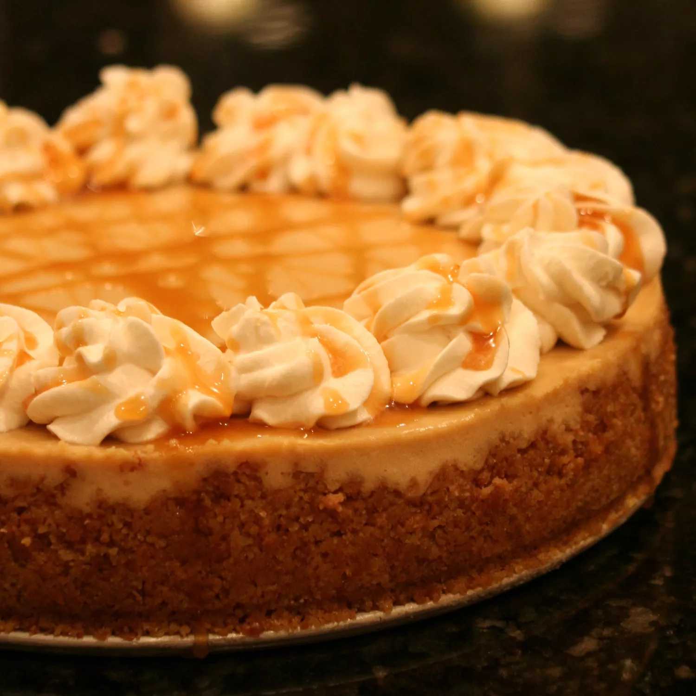

Coffee Caramel Cheesecake

Description
I work at a coffee shop and my favorite coffee drink is a caramel macchiato so I created a caramel macchiato cheesecake that has become my favorite cheesecake.
Ingredients
- 2 cups graham cracker crumbs
- ½ cup butter, melted
- 2 tablespoons white sugar
- 3 (8 ounce) packages cream cheese, softened
- 1 cup white sugar
- 3 eggs
- 1 (8 ounce) container sour cream
- ¼ cup brewed espresso or strong coffee
- 2 teaspoons vanilla extract
- pressurized whipped cream
- caramel ice cream topping
Steps
- Preheat oven to 350 degrees F (175 degrees C). Lightly coat a 9-inch springform pan with nonstick cooking spray.
- Mix together the graham cracker crumbs, melted butter, and 2 tablespoons of sugar until well combined. Press into the bottom of the prepared springform pan, and 1 inch up the sides. Bake in preheated oven for 8 minutes, then remove to cool on a wire rack.
- Reduce oven temperature to 325 degrees F (165 degrees C).
- Beat the softened cream cheese in a large bowl with an electric mixer until fluffy. Gradually add 1 cup of sugar, beating until blended. Add eggs one at a time, beating well after each addition. Stir in sour cream, espresso and vanilla. Pour batter into the baked and cooled crust.
- Bake cheesecake in the preheated oven for 1 hour and 5 minutes; then turn the oven off, partially open the door and allow the cheesecake to rest for 15 minutes more. Remove from the oven, and run a knife around the edges. Cool cheesecake on a wire rack to room temperature, then cover the springform pan with plastic wrap, and chill in the refrigerator for 8 hours.
- To serve, cut the cheesecake into wedges and garnish each slice with whipped cream and caramel sauce.